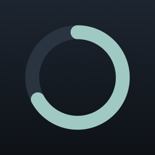
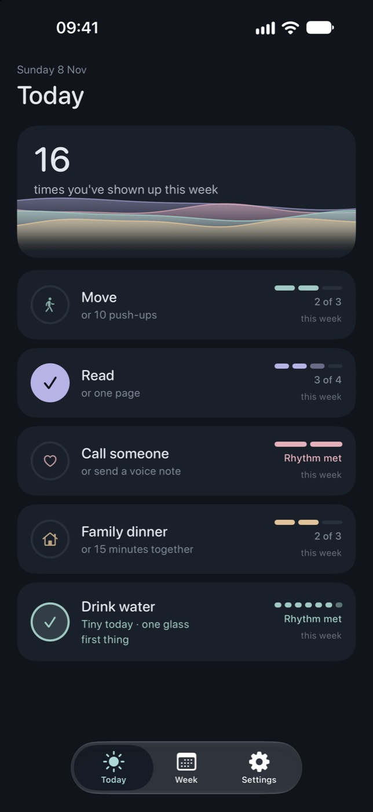
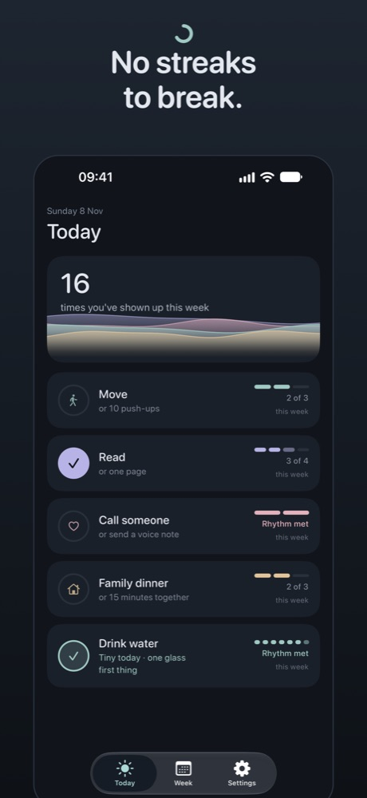
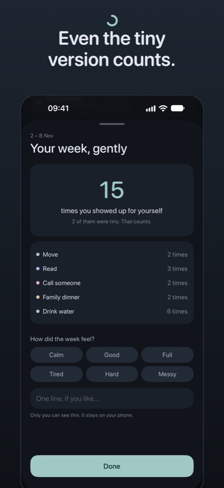
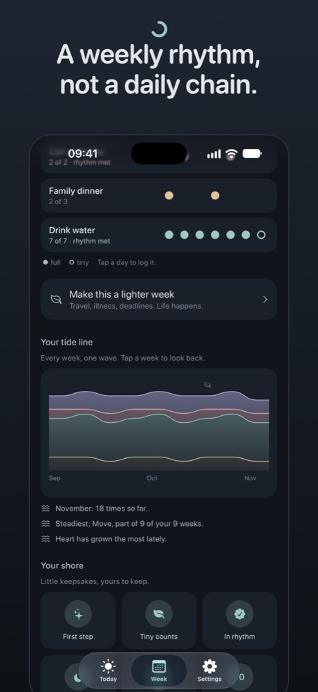
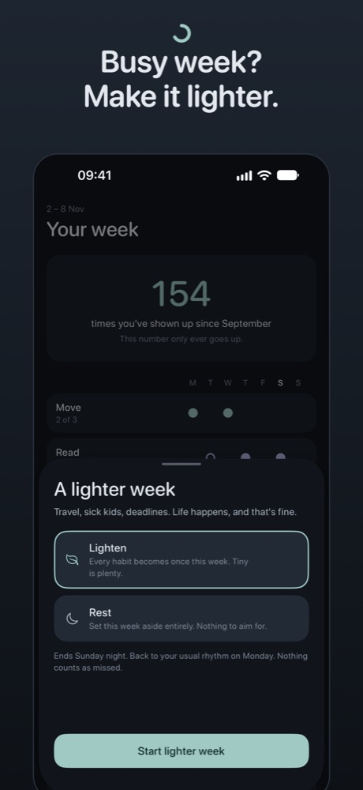
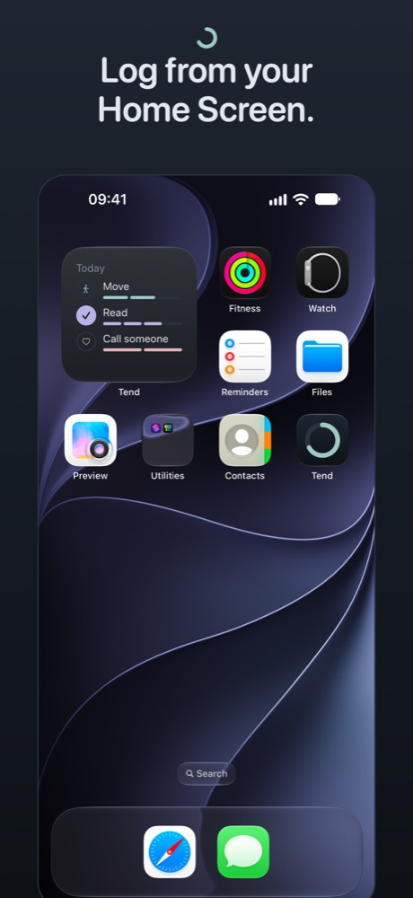

TendThe habit tracker that knows you're busy.
For people with full lives: work, kids, family, everything. No streaks to break. Just a gentle weekly rhythm, and a reminder that small steps still count.
Download on the App StoreFree for iPhoneFree for your five habits. No account. No ads. No tracking.

Ten seconds a day
Open Tend and your week is right there: a calm tide on top, your habits underneath. Tap one when you've done it. Hold it for the tiny version. A soft bloom, a gentle buzz, a kind word, and you're back to your day.
Each part of life has its own colour: Body, Mind, Heart and Home. Together they make your tide, and over the months, your tide line: one gentle wave for every week.
No streaks to break
Aim for "move 3 times this week", not every single day. A quiet Tuesday never breaks anything. There are no red crosses, ever.
Even tiny counts
Every habit has a tiny version for busy days: 10 push-ups instead of the gym, one page instead of a chapter. It counts just the same.
Busy week? Lighten it
Travel, sick kids, deadlines. Make the week lighter or rest completely, with no penalty and nothing marked as missed.
Small steps that add up
Every time you show up, a calm tide rises. Reach milestones and collect keepsakes on your shore: little rewards you can never lose.





Built for real life
What Tend does
- Five habits free, up to ten with Pro, across Body, Mind, Heart and Home
- One tap to log, or hold for the tiny version
- A weekly rhythm with a living tide that only rises
- A calm Sunday reflection: "You showed up 15 times"
- At most one gentle reminder a day, at a time you choose
- Home Screen and Lock Screen widgets
What Tend won't do
- Streaks, flames or broken chains
- Red crosses or "you missed it"
- Nagging notifications
- Ads, accounts or tracking
- Endless settings and dashboards
Free, with an optional Pro
Tend
Free
- Five habits, with tiny versions
- Today and Week, one-tap logging
- Your weekly summary and keepsakes
- One gentle daily reminder
Tend Pro
£24.99 a year
7 days free. Or £3.99 a month, or £49.99 once for life.
- Up to 10 habits
- Home and Lock Screen widgets
- Lighter and resting weeks
- Your full weekly reflection and history
Private by design
Your habits live on your iPhone, and only there. No account to create, nothing to sync to our servers, nothing sold. Read the privacy policy.
Support
Email support.tend@icloud.com and we'll reply as soon as we can, usually within two working days.
Restore Pro on a new phone: Tend → Settings → Restore purchases, signed in with the same Apple ID.
Cancel a subscription: Tend → Settings → Manage subscription, or iPhone Settings → your name → Subscriptions. Your habits stay either way.
Add a widget: long-press your Home Screen → Edit → Add Widget → Tend.